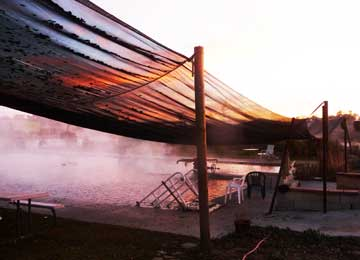
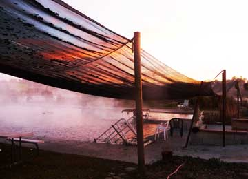
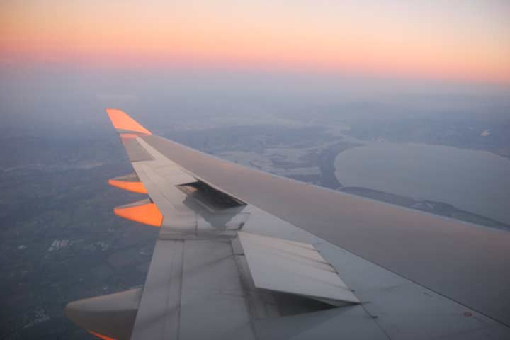
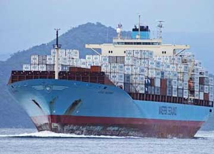

Da vi vågnede på Pear Blossum Inn, havde Grønne næsten ingenting ladet, skønt den havde været sat til hele natten.
110 volt batter ingenting, så vi skyndte os at sætte generatoren til og nød et langsomt morgenmåltid på en bænk foran værelset.
Stedet var smukt med palmer og udsigt til bjergene. Det er ubegribeligt så svært det er at finde et ordentligt strømstik med 220
volt i et land der har et megastort forbrug af el. Overalt er der aircondition, sodavandsautomater, vaskemaskiner, tørretumblere,
neonreklamer ismaskiner osv. Men hvoran vi får vi adgang til strømmen? Det er som om den er låset inde eller fortyndet.
Efter en spise- og ladepause på tre timer kørte vi videre ad motorvejen gennem Los Angeles. Et ocean af blinkende lys.
Til alt held gik vejen på lange strækninger nedad. Vi måtte alligevel holde en ekstra ladepause på en time, nåede så frem
kl 22.30 til Sam’s Family Spa i Desert Hot Springs en varm kilde i ørkenen - med god strømtilslutning.

Mike og Debby havde om eftermiddagen arrangeret et møde med de lokale elbilvenner. Det var entusiaster der lavede hjemmebyggede elbiler. Mødet var i den lokale flyveklub, med hangar og værksted. Vi viste billeder fra turen og Debbie havde skaffet frokost. Vinden blæser altid fra ørkenen op over bjergene ved Tehachapi. Her begyndte USAs vindmølle-forskning og her ligger General Electric’s vindmøllefabrik hvor Mike arbejder. De aktive folk i Tehachapi har gennem de sidste ti år fået rejst en skov af vindmøller, og de var i gang med at rejse flere. Vi sagde først farvel sent på eftermiddagen. Da vi havde startet sent kom vi ikke langt og fandt et motel i Pear Blossum lige nord for Los Angeles. Det krævede nogen overtalelse af værten før Hjalte fik lov til at bluge et elstik fra deres vaskerum, og så kunne gå til ro. At det er svært at komme fremad skyldes ikke elbilen, den kører som den skal. Miseren skyldes manglen på ladestandere.
Nina.

Strømmen var blevet afbrudt inden Grønne var ladet helt op, så vi gav os god til og pakkede langsomt i den solbeskinnede motelgård. Tilsidst kørte vi af sted med 78% strøm. Vejen gik lige ud i ørkenen, som snart viste sig at være et oliefelt med brønde og pumper. Senere kom uendelige kunstvandede vinmarker, som på denne årstid stod bladløse og grå. Med udsigt til bjergkørsel kørte vi med kun 60 km i timen for at spare på strømmen. Så kom bjergene, Grønne sneglede sig opad og vi var spændte på om vi kunne nå helt op til nogle elbilvenner i Tehachapi i 1000 meter over dalen. Det gik uden problemer og Mike og Debbie tog imod os med åbne arme. De var imponerede over at vi havde kørt helt fra Taft uden at løbe ud for strøm. Mike og Hjalte gik straks igang med at skaffe et strømstik, så den udmattede Grønne kunne få lidt frisk 220 volt strøm fra Mikes garage, hvor hans hjemmekonstruerede VW elbil stod mellem tusind andre projekter.


Jeg fik tid til at skrive lidt på bloggen og Ida badede med Elliot i den varme kilde. Imens satte Hjalte vores egen generator til for at få lidt mere strøm på Grønne. Vi mangler stadig at lære hvor den gode strøm er, og huske at spørge efter strømstyrken inden vi camperer. Men når batterierne er nede på 0% er der ikke længere noget at vælge imellem. Det er dagens dilemma: Skal vi blive her en nat mere eller skal vi få endnu en dag med kun godt 100 kørte kilometer? Vi kørte videre gennem smukke øde og kolde landskaber, og nåede frem til den den eneste cafe i McKittrick, en flække med 100 indbyggere midt i et af Californinens store oliefelter. Det viste sig at være en berømt cafe fordi ejerne Mike & Annies havde beklædt alt indvendigt med kobbermønter: gulv, lofter, vægge og inventar. Folk var rørende venlige og fandt strøm til os, så vi kunne lade med god strøm i tre timer mens vi fik en stor amerikansk middag. Mætte kørte vi videre til Taft hvor vi fandt et billigt motel. Nina
 

Frokostpause i King City, hvor vi fandt et værksted hvor Grønne kunne lade op imens vi gik på mexicansk restaurant. Vi havde også tid til at se på cowboystøvler, bukser, bælter og hatte. Havde vi haft penge til det, var vi kommet til at se sjove ud. Vi nøjedes med at købe et par overalls til Elliot i en genbrugsbutik som havde udsalg. Ida elsker varme kilder og ledte os frem til en kilde udenfor Paso Robles. Det var mørkt da vi ankom, det varme vand dampede, over nogle udtrådte sofaer strømmede syrerocken og en usandsynlig fed mand tog imod os. Vandet var vidunderligt og en sauna i et skur var rigtig varm. Alt andet lignede en losseplads. Vi kunne rejse teltene som vi ville og fik et stik til Grønne, hvis batterier var helt nede på 0% ved ankomsten. Strømmen ved den forfaldne kilde var desværre så svagelig at den passede til en lyskæde, og Grønne ladede kun 20 procent på en hel nat. Nina


Ida kørte 80-90 km i timen på de lige strækninger for at se hvor langt vi så kom - tilsyneladende ikke mere end 1,6 km pr. % opladning, men bilen har kræfter til meget højere fart. Brugte igen tid på at finde de rigtige strømstik og fik også købt en lyskæde og sendt en pakke hjem fra posthuset i Half Moon Bay med fire store kogler. Vi holdt frokostpause på en høj brink med en pragtfuld udsigt over Stillehavet. Kystvejen bølgede voldsomt op og ned, hvad der kostede en masse strøm og vi strandede på en mørk landevej. Derefter var det igen frem med generatoren for at vi kunne komme frem til en trailer-park. Grønne blev sat til en ladestander med strøm til et rullende hus. 240V! Nina


Vores RV, Recreational Vehicle, er indrettet med tre dobbeltsenge, køkken med rindende vand, tre gasblus, to stålvaske, og skabe med alt service og køkkentøj. Der er fryser, køleskab, bageovn, og microbølgeovn, skabe og skuffer og et spisebord til seks personer. Når vi trykker på en knap udvider spisestuen sig i bredden. Der er også en generator og stikkontakter som vi bruger til opladning af computere og mobiltelefoner. Og her er gasopvarmning om natten. Dette rullende hus har stor komfort, men dårlige køreegenskaber. Og skrumlet kører kun to kilometer på literen! Om aftenen fandt vi frem til China Camp State Park. Her slog en gruppe kinesiske fiskere sig ned for hundrede år siden og fiskede rejer i San Francisco-bugten. Det smukke sted er nu en fin lille naturpark. Her er helt stille. Det fryser.
Hjalte

Det seje elbilteam er nu tre generationer:Nina og Hjalte, Ida og lille Elliot. Seks måneder gammel er vores barnebarn allerede på verdensrejse. Vi er meget glade.
Hjalte

Noget chokerede har vi på TV set den brændte elbil på Norgesbåden. Så lad os straks slå fast at det ikke er Moto-Mundos. Vores grønne Qashqai Electric fra Afuture er på vej over Stillehavet, og den Blå står stadig i Sakskøbing. Grønne er en fantastisk elbil som har kørt os 13500 km gennem Norge, Sverige, Estland, Rusland, Mongoliet, Gobi-ørkenen og Kina. Den har klaret alle udfordringer og skal de næste måneder bringe os gennem USA og Europa. Vi har undervejs savnet rigtige ladestandere - men det må snart komme. Den gode nyhed er at det store Detroit Motor Show gerne vil have besøg af Grønne, så det er vi begyndt at glæde os til. Grønne vil blive landsat i San Francisco d. 3. december. Vi ankommer selv ugen før så vi kan tage imod den. Vores datter Ida og hendes lille Elliot vil køre med i Grønne den første måned indtil Dallas. Følg med her på hjemmesiden.
Nina og Hjalte

Jeg bliver næsten søsyg. Jeg står stablet sammen med hundredevis af containere på et kæmpestort skib. Derfor har jeg et stykke tid ikke kunnet ses på landkortet. Nogle tror måske at jeg stadig står på kajen i Shanghai? det gør jeg ikke. Men jeg længes efter at komme i land i San Francisco for igen få asfalt under dækkene. Der skal jeg møde de amerikanske elbil-venner som Hjalte og Nina har fået kontakt til på internettet.
Grønne